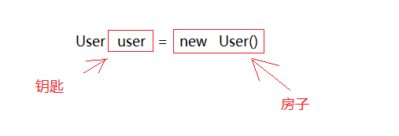
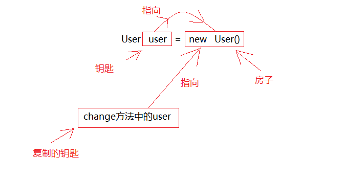
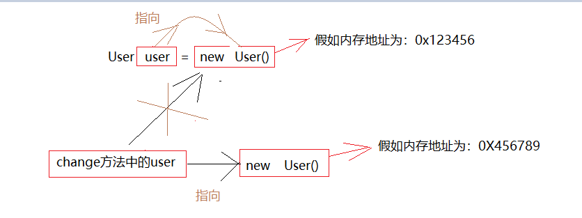
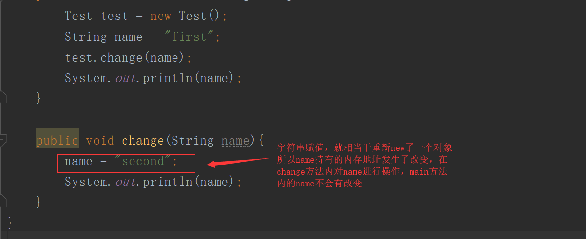

JAVA中的参数传递
❓ 在JAVA的学习中，我们或许经常性的会遇到把对象作为一个参数传递给方法，那么自然就会产生一个问题，这到底是值传递，还是引用传递呢？
或许很多人都会觉得是引用传递，但其实我们都错了！
✔答案是：对象作为参数传递是值传递，并且在JAVA中，❗❗❗只有按值传递，没有按引用传递！
我们在解释为什么之前，先来看看形参是什么，实参是什么，什么是值传递，什么又是引用传递
形参：是在定义函数名和函数体的时候使用的参数,目的是用来接收调用该函数时传入的参数。
实参：在调用有参函数时，主调函数和被调函数之间有数据传递关系。在主调函数中调用一个函数时，函数名后面括号中的参数称为“实际参数”。
值传递（pass by value）：在调用函数时将实际参数复制一份传递到函数中，这样在函数中如果对参数进行修改，将不会影响到实际参数。
引用传递（pass by reference）：在调用函数时将实际参数的地址直接传递到函数中，那么在函数中对参数所进行的修改，将影响到实际参数。
在弄清楚了这些概念之后，我们现在通过代码实践的方式，来看看JAVA中到底为什么是值传递❓❓❓
首先我们来看这样一段代码：
1⃣
1 | public class Test { |
运行结果：
1 | 2 |
从这个运行结果来看，change方法内改变i的值并没有影响到mian方法中的i，由此来看应该是值传递，那我们在来看一段实例代码
2⃣
1 | public class Test { |
这是运行结果：
1 | change方法内的name：second |
从这样的结果来看，在change方法体内对user对象进行的操作也已经改变了main方法体内的user对象，那么就此结果来说JAVA看上去又像是可以引用传递的，但是这里有一段代码却提出了疑问
3⃣
1 | public class Test { |
运行结果：
1 | second |
这样的运行结果，让我们看起来JAVA又是值传递，那么我们到底该作何解释呢？
JAVA中的值传递
| 值传递 | 引用传递 | |
|---|---|---|
| 根本区别 | 会创建副本(Copy) | 不创建副本 |
| 所以 | 函数无法改变原始对象 | 函数可以改变原始对象 |
我们在上面的几个例子之中，都只是关注了传参之后实参内容是否有所改变，但其实我们从一开始得到观察方法上就错了，我们要看的应该是它如何造成这样的结果的，而不是只看结果来得出结论，这样得出的结论当然是错误的。
关于值传递和引用传递我们可以举一个生活中实际的例子来看：
我们现在有一把钥匙，当我们的朋友想去我们家里时，我们直接把我们的钥匙给他，这就是引用传递，在这种情况下，如果他对这把钥匙做了什么事，比如说刻下了自己的名字，那么这把钥匙归还给你的时候，钥匙上也会多出他刻下的名字

我们现在有一把钥匙，当我们的朋友想去我们家里时，我们复制一把备用钥匙给他，自己的钥匙还是在自己手里，这就是值传递，这种情况下，他对他那把钥匙做什么，都不会影响到你手里的钥匙

但是，上面的两种情况，你朋友拿着你的钥匙进入到家里，把你的电脑弄坏了，你同样是会受到影响的，哦们在change方法中，改变user对象的name属性时，不正是在“弄坏电脑吗”，我们改变的不是那把钥匙，而是钥匙打开的房子。
当我们在main中new User()对象的时候，在堆中开辟一块内存，其中保存了name等数据。然后main中的user持有该内存的地址0x123456 。
当尝试调用change方法，并且main中的user作为实际参数传递给形式参数user的时候，会把这个地址0x123456 交给change中的user，这时，change中的user也指向了这个地址。
然后在change方法内对参数user进行修改的时候，即user = new User(); ，会重新开辟一块0X456789 的内存，赋值给change中的user。后面对change中的user（即内存0X456789）的任何修改都不会改变main中user(即内存0X123456)的内容。

上面这种传递是什么传递？肯定不是引用传递，如果是引用传递的话，在执行user = new User();的时候，实际参数的引用也应该改为指向 0X456789，但是实际上并没有。
通过概念我们也能知道，这里是把实际参数的引用的地址复制了一份，传递给了形式参数。所以，上面的参数其实是值传递，把实参对象引用的地址当做值传递给了形式参数。

在第二段代码中，在change方法内user指向的地址没有发生改变，所以它的修改对main方法内的user产生了影响，在第三段代码中，name指向的内存地址已经发生了改变，所以不管change方法内怎么变化，不会影响到main方法中的name
所以，值传递和引用传递的区别并不是传递的内容。而是实参到底有没有被复制一份给形参。在判断实参内容有没有受影响的时候，要看传的的是什么，如果你传递的是个地址，那么就看这个地址的变化会不会有影响，而不是看地址指向的对象的变化。就像钥匙和房子的关系。
🏁所以说，Java中其实还是值传递的，只不过对于对象参数，值的内容是对象地址的引用。